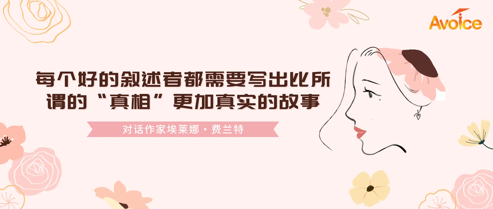
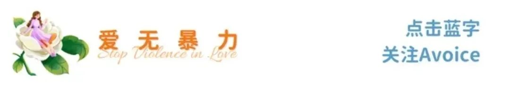
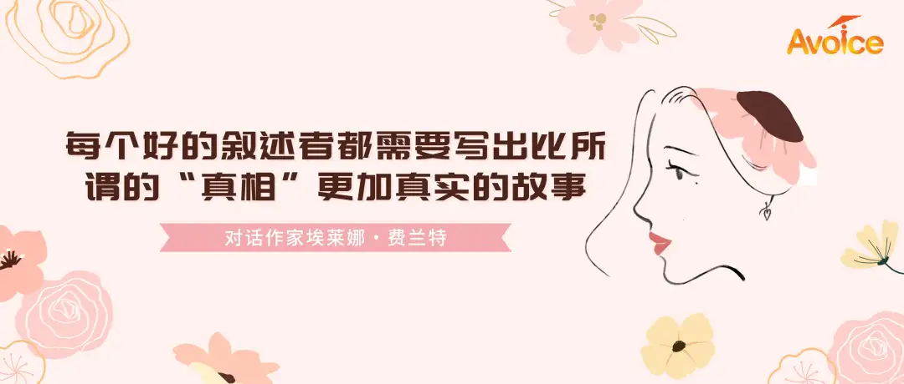
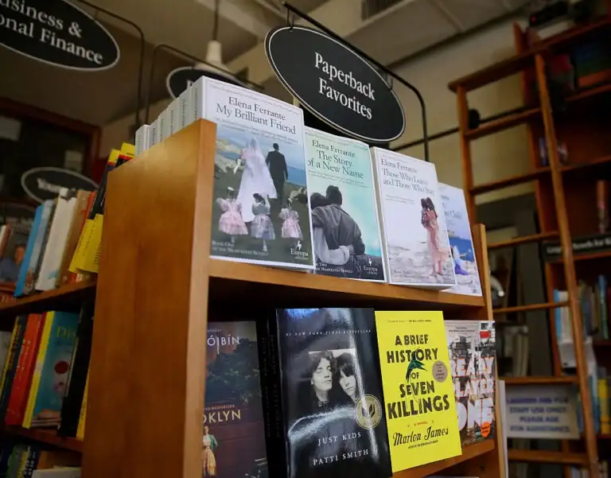
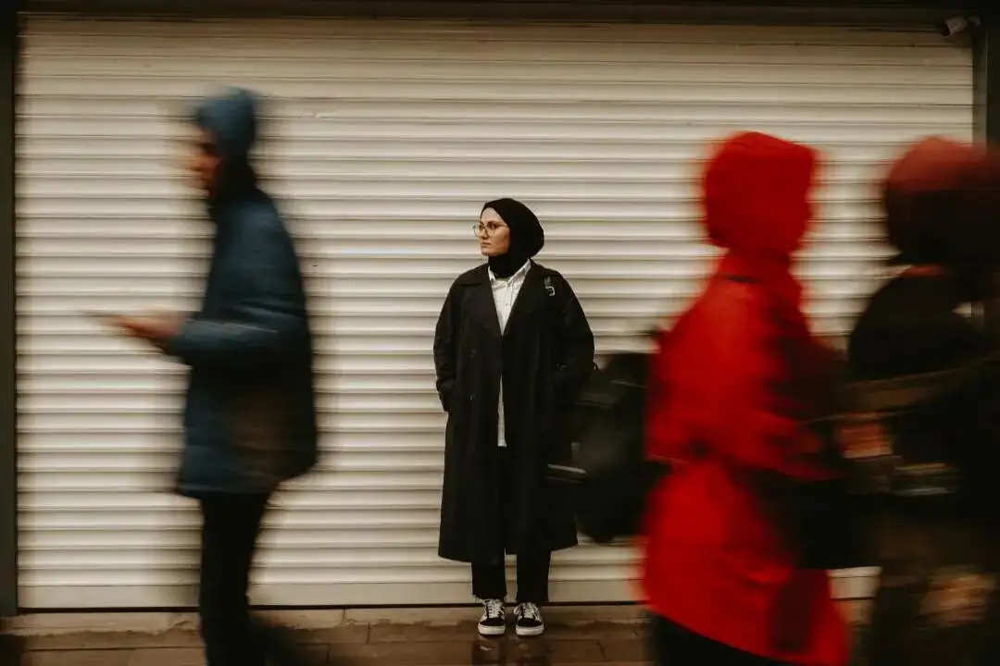

文章摘要
女性在某方面的成功头衔往往意味着进入男性的世界，这意味着学习他们创造的语言、词汇和文化。如何挣脱在被赋予的性别和获得的教育中专为女性而设的新旧牢笼？在对“诚实”的”真相“的不断追索与探求中，女性作家埃莱娜·费兰特给出了关于这个问题的答案。
在本篇文章中，我们将聚焦于女性作家埃莱娜·费兰特。无论是在意大利还是其他地区，她的作品都取得了巨大成功。《烦人的爱》，《被抛弃的日子》，《我的天才女友》等作品“在某种程度上改变并推动了”整个文化产业的发展。这篇文章是一次采访，更是一次与埃莱娜·费兰特的 “临时对话”。她这样表示：“这次对话很宝贵，可以让我借此澄清我作为一名作家的面貌。”

摆放在哈佛书店书架上的埃莱娜·费兰特的作品，马萨诸塞州
1992年，埃莱娜·费兰特凭借小说《烦人的爱》首次亮相于文坛。马里奥·马尔托内根据此小说拍摄了同名电影。2006年，《暗处的女儿》出版。玛吉·吉伦哈尔将其改编并拍摄了同名电影，并在2021年第78届威尼斯电影节中获得最佳剧本奖。2011年“那不勒斯四部曲”的第一部《我的天才女友》出版，萨维里奥·科斯坦佐从中获得灵感，拍摄了同名电视剧。2016年，她被《时代周刊》评为年度百大影响力人物。2019年，《成年人的谎言生活》出版。关于埃莱娜·费兰特真实身份的猜测层出不穷，但是都没有得到证实。
埃莱娜·费兰特对世界的影响
Q
记者
您的作品对整个世界都产生了影响，这种影响涉及到很多方面，如电影、出版业、想象力等（我们很难用上述的这些方面来评价一位作家，而且我敢肯定，您对这些可能也不感兴趣）。因此我想先询问您这样的一个问题：您的作品是如何影响您追求真相的过程的？
真相这个概念过于庞大，在某种程度上来说，甚至有些恐怖。但是您的作品以及您接受的几次采访中，您对这个词的使用非常频繁，这一点让我非常惊讶。您在《页边空白：阅读和写作的乐趣》（In the Margins: On the Pleasures of Reading and Writing）一书中，将“脏话”列为女性真相的主要敌人之一。
《我的天才女友》小说同名电视剧中的两个主角
之前曾有人问过您为什么您的前两部作品（《烦人的爱》和《被抛弃的日子》）创作的间隔时间如此之长，您这样回答：“其实并没有所谓的间隔与停顿。在这作品间的十年里，我写出了很多作品。但这些作品并不能让我满意。这些作品的内容非常丰富，也都经过了深思熟虑，但它们缺少真相。"
A
埃莱娜·费兰特
一切事情皆有影响，我们生活在冲突当中。我觉得无论好坏，我的书都给了人们一些影响。在“真相”这一问题上，我认同您的观点：真相是一个有些危险的词汇，也许我滥用了它。“诚实”这个词可能更接近我想表达的意思。“诚实”这个词意味着将所有虚构的东西都排除在外。而我更感兴趣的是在“虚构”领域中为真相而进行的斗争。约翰福音中，耶稣称自己是真理的见证者，彼拉多便用讽刺的方式问耶稣：“真理是什么呢？”而现在，对我自己和我的写作来说，彼拉多提出的问题显得并没有那么重要。但是这个问题衍生出的另一方面，即关于人物的真相，这一点显得更加重要。总之，当我使用“真相”这个词的时候，我想表达的是：每个好的叙述者都需要写出比所谓的“真相”更加真实的故事。
Q
记者
您一直在写作，也在反思写作：您如何阐述想象力和理性反思这两个创作层面的交流？想象力与理性反思是互补的吗？它们会消耗您的创作力还是说您还想借此表达些其他的内容（这种不满意的部分或未探索的部分是创作的催化剂吗）？
A
埃莱娜·费兰特
在我看来它们没有不同：反思也是一种想象力。我反而认为反思是从躯体中凿出一个我，从整体上看，对于这个我来说，写作是一件首要的事情，也是一件具有创造性的事情。没有反思的能力，作家将不复存在。作家们写出一句又一句，一稿又一稿，一部又一部作品。也许正是作家们通过写作的形式——通过他们的间断、消失与重现，通过他们在大大小小作品中的具体化，以达到创作的满足与紧凑。这种写作的方式应当被更深入地研究和描述。实际上，作家创造自我的方式正是每一种叙述中的实质部分。
关于女性的身体
Q
记者
女性的生活是您所有作品的中心，并且您在多个场合下表示您相信女性文学写作的存在。您能跟我们说说它的性质吗？当有关性别定义时该怎么样避免一些陈词滥调？电影行业中如果一位女导演拍出比一般作品更强的作品，例如凯瑟琳·毕格罗，人们会常常会说"她导演得像个男人"。
A
埃莱娜·费兰特
首先我会问自己为什么说一个女人“导演得像个男人”听起来多少像句恭维，而说一个男人“导演得像个女人”则几乎是在侮辱。这种词语的运用非常有趣。这会让我们女性马上意识到，带着某些头衔进入这个世界就相当于进入男性的世界，这意味着学习他们创造的语言、词汇和文化。

成功本身只有两条路：要么根据他们按照自己的需求塑造的标准成为一个偶像，一个强大的人；要么不断去证明我们知道如何在他们圈起来的地盘里玩得风生水起，让他们说：做得好，你值得嘉奖，你和我们一样懂得在所有领域表达你自己，但你甚至在某些情况下表现得更好。当然还有第三条路，更为艰难，但在这一个世纪以来越来越受欢迎：我们尽全力以最好的方式获得人类精心制作的“工具”，并运用它、改变它、利用它来真正地表达我们自己。
但是，我认为“我们”本身并不存在。“我们”本身这个概念只存在于我们现今的处境中，伴随着那些不言而喻的，不能宣之于口的，没有被想到的，和始终处于危险中的小小成就。除了这些意外，我们完全需要自己去创造“我们”这个概念，这既是可怕的又是美妙的。
Q
记者
每个人，不仅仅是作家，还都属于他们成长的年代，他们在那段时间经历了最初的情感和悲伤，接受了文化的熏陶。从您小说中的细节和提及的资料，我们可以感觉到您是在50年代长大的。如果您真的见证了半个多世纪以来我们社会的变化，您会得出什么结论？我想到的是男女关系的变化以及性别的流动性，尤其是对年轻一代而言。
A
埃莱娜·费兰特
二十世纪是一个伟大的可怕的关于变革与破坏的世纪，同时很多旧事物也在这个时代中复现。它是一段被局限在囹圄里的历史，是一个不断被重组的时代，在笼子里不断地流淌着鲜血。我们决不能忘记这一点，每一次被强迫改变和被修复的都是活生生的身体。我们都是笼中的生命体。在当地的语言中、在出生的环境中、在边界和传统中、在帝国权威控制的网络中、在被赋予的性别和获得的教育中，我们一直在斗争着。由于我们的斗争，许多事情，尤其是关于妇女地位方面的事情，已经得到了改变。但是，旧事物的恢复能力仍然是强大的，是具有威胁性的。
在所有的生命体中，女性身体所受到的威胁其实是最大的：在为我们女性而设的新旧牢笼中，是各类保守主义者、各类企图复辟旧事物的人取得了最终胜利。任何能够帮助我们逃脱牢笼的人或物都应该得到鼓励。 我欣赏性别的流动性。只要我们不把它理解为一个在女性和男性的笼子之间反复移动的游戏，这种游戏没有实质内容，只是一些陈规旧俗的重复，只是一些已成为过去时的社会角色的重新出现。
埃莱娜-费兰特扮演的女性角色
Q
记者
当我想到您小说中“解脱的”女性角色时，我不禁随着记忆去读柯莱特和薇拉·凯瑟这样的女作家或福楼拜这样的男作家。您已经在其他场合说过，您所喜爱的文学作品太多了，无法汇总，但我想知道您是否能给我一些更相关的信息：关于危机、关于变化、关于转变。
A
埃莱娜·费兰特
我不想错怪任何一个我喜爱的作家，但就您提出的这个话题而言，克拉丽丝·李斯佩克朵的作品至关重要。人们应当非常仔细地阅读和重读她的作品。
Q
记者
最后，您一直采用电子邮件的方式进行非访谈性对话，这一点让我感到惊讶。我们在这些网页上发布的对话也是这种形式。这些对话也是文学作品的一部分，它们可能揭示了创作中尚未被探索的方面，同时也表现了不惜任何代价抵制压力的强烈政治立场。是这样的吗？这些远程的邮件对话对您来说代表着什么？
A
埃莱娜·费兰特
慢慢地，随着时间的推移，这些对话已经成为一个机会。在这些机会中，我可以通过写作来澄清我作为一个作家的面貌。邮件中提出的这些问题对我来说是一种动力，它们促使我去寻找，去定义我作为作家的面貌。有时我会成功，有时则不。
Q
记者
过去，您曾表达过希望能有一个只由女性组成的意大利政府。在（2022年）大选的前夕，您又有什么想法？
A
埃莱娜·费兰特
我的确希望看到一个全女性的政府。但是我希望大家能够理解，当我谈到女性时，我不是指男性对女性的成见。我指的是那些能够摆脱强大的男性政治传统束缚的女性。她们对于这种政治传统了如指掌，但能够做到不受制于它、重新创造它。
本文节选自意大利报纸《晚邮报》（Corriere della Sera）的旗下媒体《IO Donna》2022年9月11日文章《Donne d’impatto: Elena Ferrante, scrittrice》。
译者｜张悦心 陈嘉慧 徐钟瑞
中文编辑｜徐琳琳
排版、封面制作｜李虹
图片来源｜Pexels.com 、Pixabay.com